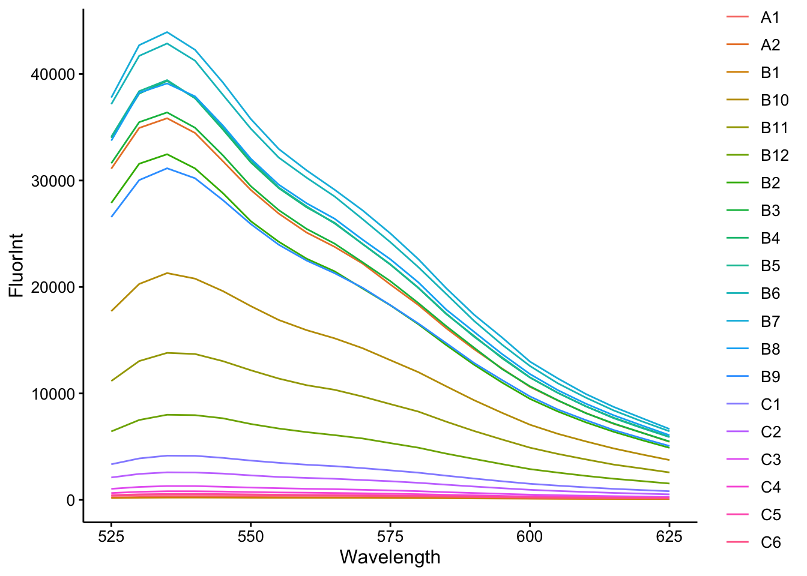
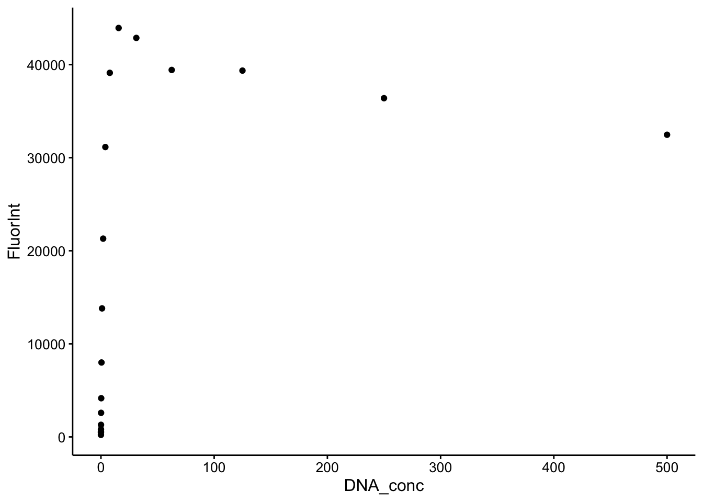
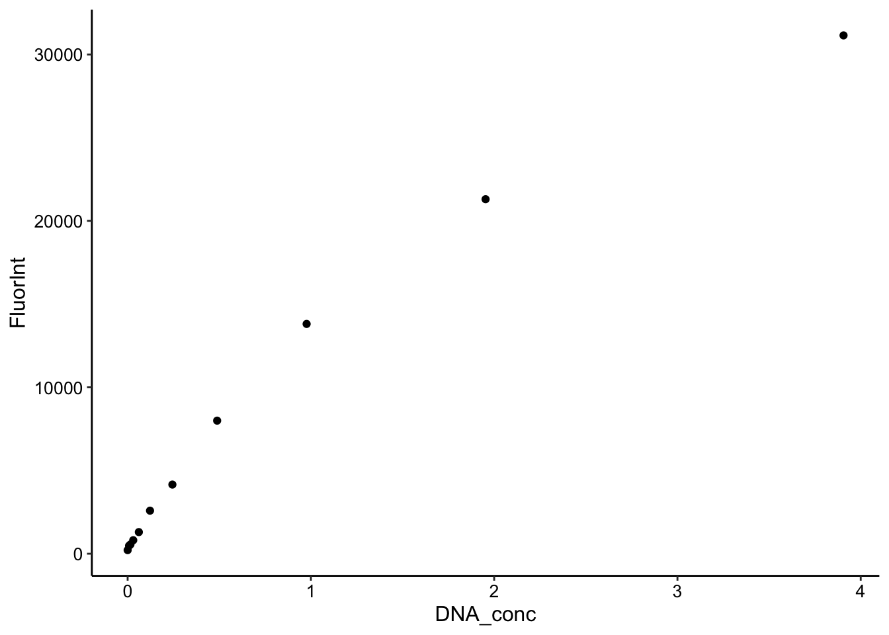
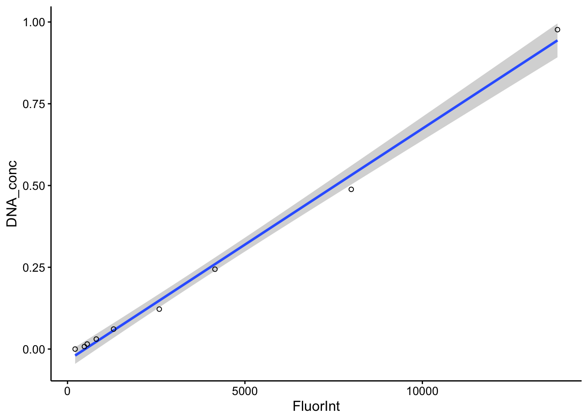
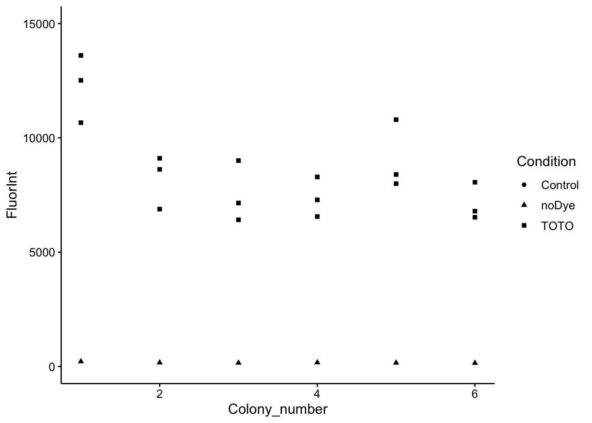
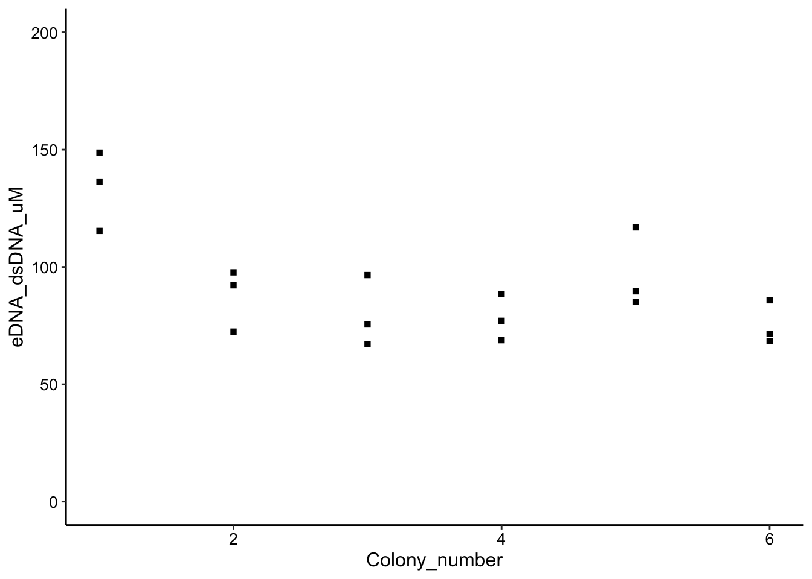
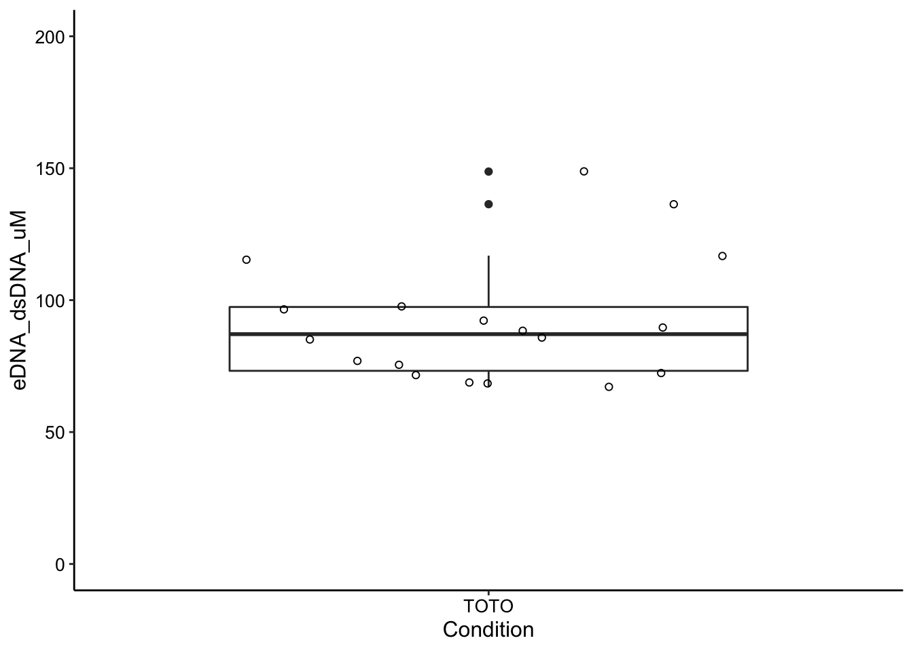

library(tidyverse)
library(cowplot)
library(broom)
library(modelr)
library(viridis)
library(lubridate)
library(hms)
library(knitr)
library(kableExtra)
library(ggridges)
knitr::opts_chunk$set(tidy.opts=list(width.cutoff=60),tidy=TRUE, echo = TRUE, message=FALSE, warning=FALSE, fig.align="center")
source("../../../../IDA/tools/plotting_tools.R")
theme_set(theme_1())This experiment was first attempted as documented in this notebook, which is not in the git repository:
Documents/Winter%202018/eDNA_experiments/DNase_ctDNA_04_03_18/Reports/Notebook_DNase_ctDNA_04_03_18.html
So for a long time we have wanted to get an idea of how much eDNA is in the colony biofilms and try to understand the stoichiometry of phenazine to eDNA. We assume there is abundant eDNA and therefore that it can provide the expected binding sites for PYO and PCN in the extracellular matrix, but we needed to measure for sure.
The approach to make this measurement was to resuspend colony biofilms (as for HPLC measurement) and take some of the biofilm suspension and quantify TOTO-1 fluorescence in the plate reader. TOTO-1 should preferentially bind to the eDNA and we have an estimate of volume, so if we can calibrate the dye fluorescence with a known quantity of eDNA we should be able to extract a concentration of eDNA in the colony. I set out to repeat the original experiment with six WT colonies.
The black 96 well plates were used to read fluorescence in the ‘new’ Tecan plate reader. Well volumes were 100uL total and the reading height was calibrated off of a well. Each well consisted of the the following:
TOTO-1 fluorescence was excited at 480nm and emission was read from 525 to 625nm (the em max 535 is used downstream). Gain was 75.
For the calibration curve calf thymus DNA was used. A fresh 2mg/mL stock was made in PBS50 and it was diluted 2 fold serially. Therefore the well concentrations spanned from 500 ug/mL to ~7 ng/mL.
For the colony data the six biological replicates were each measured in technical triplicate with TOTO-1 and once without the dye to assess the background fluorescence.
Note that the original excel files with the plate reader output and metadata are in the data directory along with csv versions of the actual data and the well metadata. Images of the colonies are associated with the larger colony experiment performed at this data, but they looked normal and indistinguishable from each other.
Volumes of these colonies were estimated and samples were taken as normal for HPLC.
First let’s look at the calibration / binding curve and then we can use that to estimate the eDNA in the colonies.
Let’s go ahead and read in the data and metadata and combine into a nice long form to work with.
cal_data <- read_csv("../pr_data/07_23_19_ctDNA_calcurve_toto1_data.csv") %>%
gather(key = "Well", value = "FluorInt", -Wavelength)
cal_meta <- read_csv("../pr_data/07_23_19_ctDNA_calcurve_toto1_well_metadata.csv",
skip = 1, col_types = "cd")
cal_df <- left_join(cal_data, cal_meta, by = "Well")
tail(cal_df) %>% kable() %>% kable_styling()| Wavelength | Well | FluorInt | DNA_conc |
|---|---|---|---|
| 600 | C6 | 211 | 0.0076294 |
| 605 | C6 | 189 | 0.0076294 |
| 610 | C6 | 172 | 0.0076294 |
| 615 | C6 | 155 | 0.0076294 |
| 620 | C6 | 141 | 0.0076294 |
| 625 | C6 | 134 | 0.0076294 |
Here’s what all the data look like:
ggplot(cal_df, aes(x = Wavelength, y = FluorInt, color = Well)) +
geom_path()
So you can see that we have a wide variety of intensities (despite the same amount of dye), but clearly the emission is the same shape and peak is at 535. Let’s just look at the ctDNA concentration vs. Fluorescence Intensity at 535nm:
ggplot(cal_df %>% filter(Wavelength == 535), aes(x = DNA_conc,
y = FluorInt)) + geom_point()
ggplot(cal_df %>% filter(Wavelength == 535) %>% filter(DNA_conc <
5), aes(x = DNA_conc, y = FluorInt)) + geom_point() So the higher values of the DNA definitely saturate the Dye (top), but zooming in (bottom) shows a nice binding curve like response. It’s not perfectly linear at this scale, but the important part is that more DNA yields more dye fluorescence in a reasonable manner.
I’ve taken the liberty of glancing ahead at the colony fluorescence values. They span ~5000 to 15000 fluorescence units, so let’s zoom in a little further and flip the axes to see what our calibration curve looks like in that region.
ggplot(cal_df %>% filter(Wavelength == 535) %>% filter(DNA_conc <
1), aes(x = FluorInt, y = DNA_conc)) + geom_smooth(method = "lm") +
geom_point(shape = 21)
Not bad…it’s a little sparse in this region and the response probably isn’t truly linear, but the linear model will allow us to make a reasonable extrapolation between the datapoints. If we were feeling fancy we could probably fit an actual binding curve to this data and use that as the calibration curve model.
Anyway, here’s the model we will actually use:
cal_model <- lm(DNA_conc ~ FluorInt, data = cal_df %>% filter(Wavelength ==
535) %>% filter(DNA_conc < 1))
summary(cal_model)##
## Call:
## lm(formula = DNA_conc ~ FluorInt, data = cal_df %>% filter(Wavelength ==
## 535) %>% filter(DNA_conc < 1))
##
## Residuals:
## Min 1Q Median 3Q Max
## -0.043478 -0.015304 0.008152 0.011042 0.032752
##
## Coefficients:
## Estimate Std. Error t value Pr(>|t|)
## (Intercept) -3.513e-02 1.100e-02 -3.193 0.0152 *
## FluorInt 7.090e-05 1.967e-06 36.038 3.29e-09 ***
## ---
## Signif. codes: 0 '***' 0.001 '**' 0.01 '*' 0.05 '.' 0.1 ' ' 1
##
## Residual standard error: 0.02553 on 7 degrees of freedom
## Multiple R-squared: 0.9946, Adjusted R-squared: 0.9939
## F-statistic: 1299 on 1 and 7 DF, p-value: 3.29e-09So the linear model fits reasonably well even though it’s probably wrong. Let’s move forward using this despite its imperfections, it should allow us to make a reasonable statement about the eDNA concentration in terms of the ctDNA equivalent.
Ok, now the exciting part. Let’s take a look at the colony data in the same format:
wt_data <- read_csv("../pr_data/07_23_19_WT_colonies_toto1_data.csv") %>%
gather(key = "Well", value = "FluorInt", -Wavelength)
wt_meta <- read_csv("../pr_data/07_23_19_WT_colony_toto1_well_metadata.csv")
wt_df <- left_join(wt_data, wt_meta, by = "Well")
tail(wt_df) %>% kable() %>% kable_styling()| Wavelength | Well | FluorInt | Condition | Colony_number | Replicate |
|---|---|---|---|---|---|
| 600 | G6 | 3076 | TOTO | 6 | 3 |
| 605 | G6 | 2753 | TOTO | 6 | 3 |
| 610 | G6 | 2435 | TOTO | 6 | 3 |
| 615 | G6 | 2179 | TOTO | 6 | 3 |
| 620 | G6 | 1958 | TOTO | 6 | 3 |
| 625 | G6 | 1744 | TOTO | 6 | 3 |
ggplot(wt_df %>% filter(Wavelength == 535), aes(x = Colony_number,
y = FluorInt, shape = Condition)) + geom_point() + ylim(0,
15000)
Ok, so we can learn a vew things from this. First, there is some biological variation between the colonies, but overall they’re in a pretty tight window. The other thing we can see is that there is significant technical variation within each colony from the technical triplicates. This probably makes sense as the bit of biofilm that gets resuspended in each well may be quite different. Lastly, the background fluorescence is really negligible. Overall, I think these data look pretty good!
Now let’s try to convert those fluorescence intensity values into predictions for the amount of eDNA in each colony biofilm.
We can use the linear model from the calf thymus calibration curve to add predictions from the WT colony data, but that only gives us a value in terms of ug / mL of ctDNA in the well. We really want to get to uM bp dsDNA.
So first we are going to multiply by 4 to get from the concentration in the well to the concentration of eDNA in the biofilm suspension tube. Then we can convert into the concentration in the biofilm by multiplying by the dilution factor 800uL / 60uL.
Lastly, we need to go from ug / mL to uM by using a conversion factor from NEB which is that 50 ug / mL DNA is equivalent to 150uM dsDNA bp, so we multiply by 150 / 50. That gives us a dataframe that looks like this:
wt_preds <- wt_df %>% filter(Wavelength == 535) %>% add_predictions(cal_model) %>%
mutate(eDNA_ug_mL = pred * 4 * 800/60) %>% mutate(eDNA_dsDNA_uM = eDNA_ug_mL *
150/50)
tail(wt_preds) %>% kable() %>% kable_styling()| Wavelength | Well | FluorInt | Condition | Colony_number | Replicate | pred | eDNA_ug_mL | eDNA_dsDNA_uM |
|---|---|---|---|---|---|---|---|---|
| 535 | G1 | 13607 | TOTO | 1 | 3 | 0.9295607 | 49.57657 | 148.72971 |
| 535 | G2 | 8622 | TOTO | 2 | 3 | 0.5761404 | 30.72749 | 92.18247 |
| 535 | G3 | 7151 | TOTO | 3 | 3 | 0.4718513 | 25.16540 | 75.49621 |
| 535 | G4 | 8291 | TOTO | 4 | 3 | 0.5526736 | 29.47593 | 88.42778 |
| 535 | G5 | 7998 | TOTO | 5 | 3 | 0.5319009 | 28.36805 | 85.10414 |
| 535 | G6 | 8059 | TOTO | 6 | 3 | 0.5362256 | 28.59870 | 85.79609 |
So now we can view our WT colony measurements in terms of an estimated uM dsDNA bp:
ggplot(wt_preds, aes(x = Colony_number, y = eDNA_dsDNA_uM, shape = Condition)) +
geom_point() + ylim(0, 200) + guides(shape = "none")
We can view all these measurements together with boxplot stats:
ggplot(wt_preds %>% filter(Condition == "TOTO"), aes(x = Condition,
y = eDNA_dsDNA_uM)) + geom_boxplot() + geom_jitter(shape = 21) +
ylim(0, 200)
And if we take the mean value of each colony we get these numbers:
wt_means <- wt_preds %>% filter(Condition == "TOTO") %>% group_by(Colony_number) %>%
summarise(mean_eDNA = mean(eDNA_dsDNA_uM))
wt_means %>% kable() %>% kable_styling()| Colony_number | mean_eDNA |
|---|---|
| 1 | 133.48408 |
| 2 | 87.44090 |
| 3 | 79.72733 |
| 4 | 78.09009 |
| 5 | 97.20007 |
| 6 | 75.22019 |
Finally taking the mean of those biological replicates gives a mean eDNA concentration of 91.860442 uM dsDNA bp.